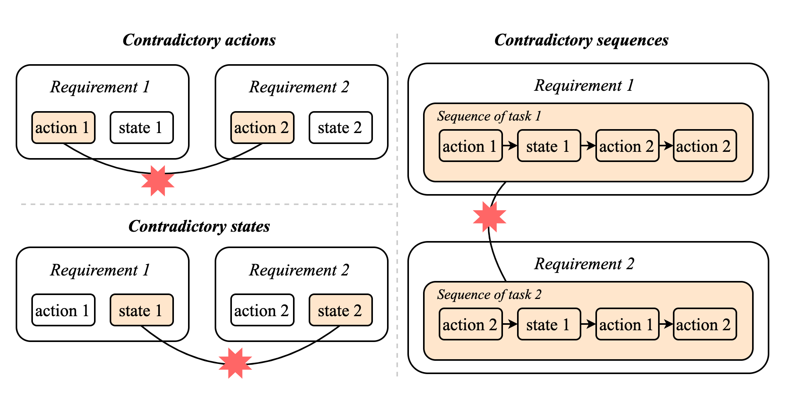
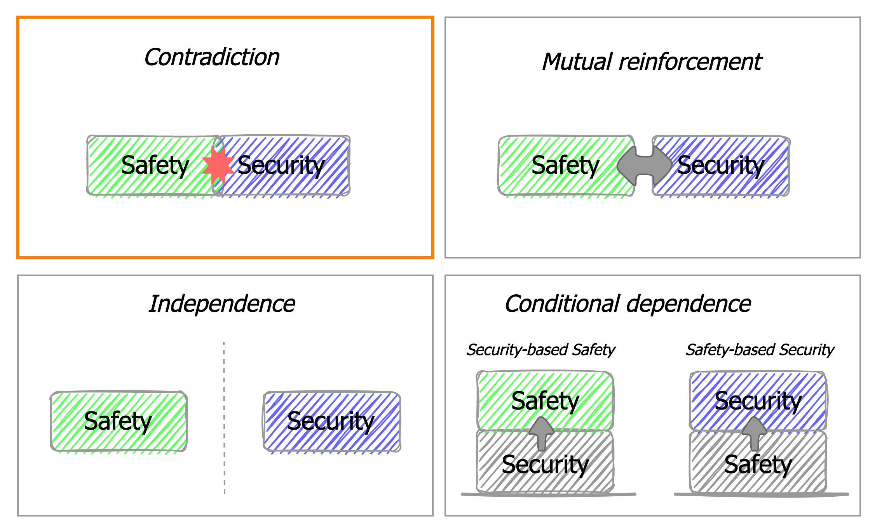
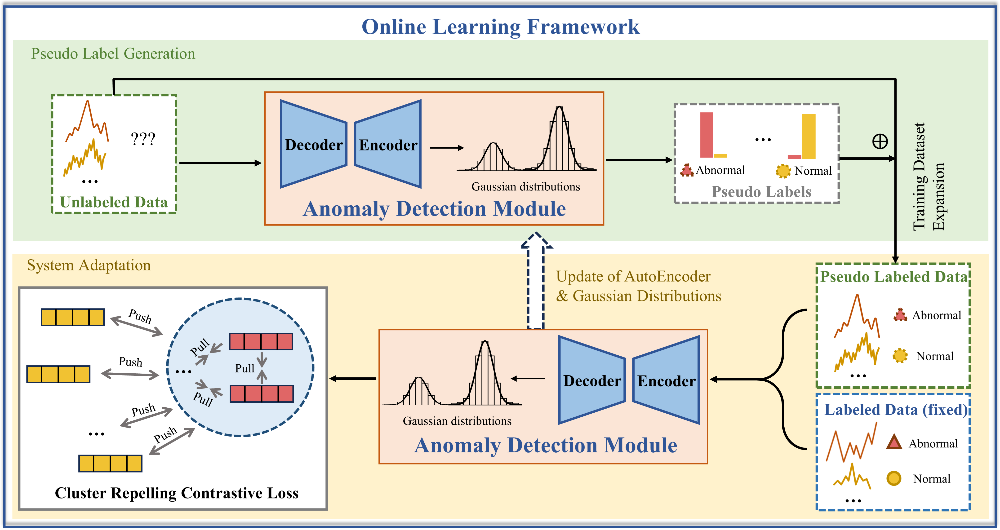

Zhicong Sun (Zeeco) 孙智聪
PhD Candidate, PolyU · Incoming Postdoc, NTU DISC Lab
I am a final-year PhD candidate at PolyU, advised by Prof. Jacqueline Lo, Prof. Anthony Chen, Prof. Siu-Ming Lo, and Prof. Jinxing Hu.
My research focuses on robotic perception, reasoning, and planning in dynamic, unstructured environments and their applications to safety-critical scenarios such as wildfire response. I also work on the safety & security of cyber-physical systems.
Previously, I received my M.Eng. from SUSTech (advised by Prof. Shuang-Hua Yang and Prof. Yulong Ding), and my B.Eng. from HIT (advised by Prof. Changjun Yu).
news
- May 2026 Excited to share that I will join NTU DISC Lab as a Postdoctoral Researcher, working with Prof. Bryan G. Pantoja-Rosero.
- Oct 2025 WildfireX-SLAM accepted to MMM 2026 as Oral.
- Sep 2025 Updated personal page; new project page for D4DGS-SLAM.
- Jun 2025 D4DGS-SLAM accepted to IEEE/RSJ IROS 2025 as Oral.
- Jun 2024 Wrapped up research internship at Huawei 2012 Theory Lab, Hong Kong.
- Jun 2024 Survey paper on joint safety & security risk analysis published in IET Cyber-Physical Systems.
- May 2024 AOC-IDS accepted to IEEE INFOCOM 2024 (co-author).
- Nov 2023 Contradictions identification paper published in IEEE IoT Journal (26-page article).
- Sep 2023 Started PhD at The Hong Kong Polytechnic University.
selected publications
full list on Scholar →Robotic Perception, Reasoning & Planning
WildfireX-SLAM: A Large-scale Low-altitude RGB-D Dataset for Wildfire SLAM and Beyond
Zhicong Sun, Jinxing Hu, Jacqueline Lo
32nd International Conference on Multimedia Modeling, 2026.
Cyber-Physical Systems · Safety & Security



Co-first-authored and under-review works (TCYB, TDSC) are listed on Google Scholar.
education & experience
-
2023 — present
Ph.D., Robotics & CEE · The Hong Kong Polytechnic University
Advisors: Prof. Jacqueline Lo, Prof. Anthony Chen, Prof. Siu-Ming Lo, Prof. Jinxing Hu - 2024 Research Intern · Huawei 2012 Theory Lab, Hong Kong
-
2020 — 2023
M.Eng., Computer Science and Engineering · Southern University of Science and Technology
Advisors: Prof. Shuang-Hua Yang, Prof. Yulong Ding -
2016 — 2020
B.Eng., Communication Engineering · Harbin Institute of Technology
Advisors: Prof. Changjun Yu
awards & honors
- 2020 Top 10 Influential Graduate, HITwh — ranked 2nd, selection ratio 10 / 2368, with scholarship
- 2020 Second Prize, Preliminary Contest of Business Plan, 15th China Graduate Electronic Design Contest (First Author)
- 2019 Second Prize, Final Tournament of the 18th RoboMaster University Championship (First Author)
- 2019 Grand Prize, North China Division, 18th Robomaster University Technical Challenge (First Author)
- 2018 Grand Prize, 7th China Marine Vehicle Design and Construction Contest (First Author)
- 2017—'19 Science and Technology Innovation Scholarship, HITwh (3 consecutive years)
▸ show 10 more awards & honors
- 2020 Second Prize, South China Division, 15th China Graduate Electronic Design Contest (Second Author)
- 2019 First Prize, Northern Division, 18th RoboMaster University Championship (First Author)
- 2019 Outstanding Scientific and Technological Innovation Individual, HITwh
- 2019 Participation Award, ICRA RoboMaster AI Challenge (Member)
- 2018 Third Prize, University Student Science and Technology Innovation Competition, Shandong (Second Author)
- 2018 Third Prize, Northern Division, 17th RoboMaster University Championship (First Author)
- 2018 First Prize, HITwh Internal Contest, Shandong Science and Technology Innovation Competition (Second Author)
- 2018 Second Prize, 1st HITwh Headmaster Cup Science and Technology Contest (First Author)
- 2018 First Prize, HITwh AI & Intelligent Hardware Contest (First Author)
- 2017—'18 Outstanding Party Member · Excellent Volunteer · Social Work / Sports Scholarship, HITwh
services
Reviewer · ICCV · IROS · IEEE Internet of Things Journal · Archives of Computational Methods in Engineering (Springer) · MMM